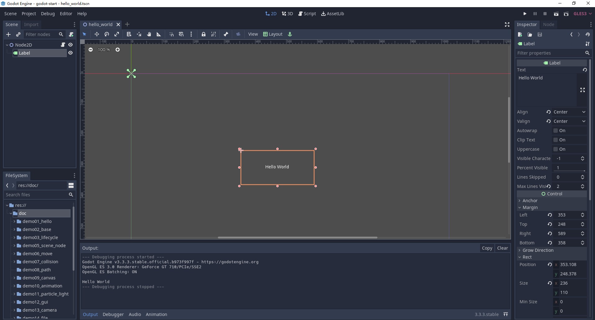

1. godot的界面介绍

侧面分栏（Dock）
-
点击侧面分栏的右上角可以调整分栏的位置
-
左侧面分栏具体包括：
- 文件系统（FileSystem），显示了当前项目中所有的资源文件
- 导入（Import），显示了文件系统分栏中所选资源文件的导入设置。
- 场景（Scene），按照层级结构显示当前场景中的所有节点，可以简单的理解为一个游戏里的场景/关卡
-
右侧面分栏具体包括：
- 属性（Inspector），显示了场景分栏中所选节点的属性。
- 节点（Node），显示了与当前场景分栏中所选节点对应的一些“信息”。
中间面板：
-
主工作区（Workspace）
- 2D，当在场景分栏中所选节点为2D类型时，会自动进入此工作区。
- 3D，当在场景分栏中所选节点为3D类型时，会自动进入此工作区。
- 脚本（Script），此工作区可以对当前项目中的脚本进行编辑。
- 资源库（AssetLib），可以搜索并浏览网站上的资源
-
底部面板（Bottom Panel）
- 隐藏
-
与Unity和UE4不同的是：Godot这种布局关系当前是相对固定的，即它不能随意调整任意一个面板的位置或脱离成独立的窗口。虽然这看似是一个缺点，不过从某种程度上讲也让引擎变得更简单了。
-
如果布局乱了，恢复一下就可以了，Editor | Editor Layout | Default
2. 场景和资源
- 场景 Scene ，就是一个游戏里的场景 / 关卡
- 创建场景，在res面板的文件夹下右键，New Scene创建场景
- 资源 Asset，指游戏里用到的素材、脚本等数据文件
比如，常用的几种类型:
Texture 图片素材 ( *.jpg / *.png)
Audio音频素材 ( *.mp3)
程序脚本GdScript ( *.gd)
- 可以对素材执行删除 Delete 、重命名 Rename 等操作
3. 场景视图和游戏视图
-
场景视图Scene ，即场景编辑器窗口，默认地，创建了一个场景empty
-
鼠标滚轮 ：放大/缩小视图
-
鼠标右键拖拽：平移视图
-
网格，每一个大网格包括8*8的小网格，每个小网格8个像素
每一个小格子为：8像素 x 8像素
每一个大格子为：64像素 x 64像素
-
场景视图中的蓝色框区域是可见的范围，对应的就是运行游戏的时候的游戏视图
-
本教程所有的每节课都很简单，这是因为对godot的知识做了拆解，把复杂的知识拆解为一个一个简单的知识点
-
然后把每个简单的知识点单独作为一节课，所以整个课程的难度是一种渐进式的
-
复杂的东西都是由一个一个简单的知识构成的，不要觉得课程简单，如果简单的东西不熟练不练习，后面的课程很可能会更不上
4. 游戏对象（节点）
-
游戏对象 Node，就是场景中包含的内容，godot所有操作都是基于节点Node
-
演示：向Scene窗口里添加几个图片
1 准备图片素材
2 把图片拖到2D游戏场景中
3 在Scene窗口中，观察新加的游戏对象
- 游戏对象的简单操作：
1 选中游戏对象
从左侧的层次管理器（Scene窗口）中选中游戏对象
2 移动游戏对象
选用移动工具，拖动小方块
3 修改对象名字
在Scene窗口中，可以修改名字、删除对象等操作
5. 坐标系

- 选择移动工具，移动一个对象
- 可以通过鼠标去移动游戏对象，也可以通过键盘方向键移动游戏对象，也可以手动修改position的坐标x和y去更加精确的移动对象
在 Inspector 属性面板：
观察对象的坐标 Position: x, y
可以发现，对象的坐标会随之变化
- 世界坐标系，又称为全局坐标系
y轴向下为正
x轴向右为正
一个像素在真实世界中，可以自行约定，比如约定1像素=1米
-
相对坐标系，又称为局部坐标系或者本地坐标系，相对于父节点的坐标，godot的坐标都是相对坐标
-
全局坐标和局部坐标可以相互转化
Node2D及其子节点的位置可以使用position和gloabl_position来控制，其中，前者是该节点相对于父节点的相对位置，后者是全局位置。
简而言之，position的坐标系是以父节点的位置坐标为原点的坐标系，方向，还是水平向右为x轴正方向，竖直向下为y轴正方向。
需要注意的是，全局位置是以场景的左上角为原点的，并不是以根结点的位置作为原点的
6. 节点的基础操作
- Q，选择工具，最强大的工具
Alt + 拖曳边框缩放点，保持选中目标中心位置不变进行缩放
Shift + 等比列缩放
Ctrl + 鼠标拖曳，以pivot为中心旋转当前对象
- W，移动工具，改变 Position
Move Mode 对象的移动：
单独改变X坐标
单独改变Y坐标
拖拽中间的方块，可以任意拖动
也可以直接在 Inspector 中输入坐标，会更精确一些
- R，旋转工具，改变 Rotation
轴心点，又称中心点，是节点的旋转中心
V，移动轴心点，Shift + V 拖拽轴心点
中心点是一个物体的中心，当我们对物体进行操作的时候，都是以中心点为中心进行对物体的操作
轴心点可以理解为把物体抽象成一个点，物体的位置就是指其轴心点的位置，就是该物体坐标系的原点
后面的课程会继续介绍轴心点
Rotate Mode 对象的旋转
沿轴心点旋转
- S，缩放工具，改变 Scale
Scale Mode 对象的缩放
沿 X 轴缩放
沿 Y 轴缩放
拖拽中间的小方块，X 和 Y 等比例缩放
- F，居中选取对象，非常有用的快捷键
7. 节点操作的工具，多节点选择，轴心点，平滑，尺子
- 多节点选择工具，show a list，主要用来精确选择层叠在一起的节点
- 轴心点工具，移动轴心点，和选择工具中的快捷键V有同样的作用
- 平滑工具，固定场景
- 尺子工具，量图片或者节点的像素
8. 智能对齐Snap和锁定节点
- 智能对齐，Smart Snap
- 网格对齐，Grid Snap
- 锁定节点，使其不能移动
- 子节点不可选中